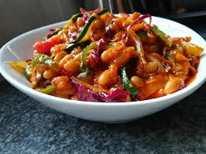

Chakalaka recipe

What is chakalaka
Simple yet pleasing in every way, this South African –born spicy vegetable side can be as spicy or as mild as you like it. It all depends on you and which direction you want to go.
Chakalaka is a dish that originates from South Africa and it is staple throughout the country. Mostly during celebrations, gathering and a must have during braais (South African barbecues). Legend has it that- it was was developed by men working in the goldmines- they put together vegetables on hand together with canned beans to form a great relish to pair with their starchy side.
What you will need
- Onions
- Green pepper
- Cabbage
- chillies
- Carrots
- Curry powder
How to make
- In a large saucepan or Dutch oven, heat oil over medium heat.
- Add onion, give it a minute or two,
- Stir in all the spices; garlic, ginger, smoked paprika, curry, cayenne pepper, thyme- continue stirring for about a minute to let the flavors bloom. Then add tomatoes, bell peppers, carrots and cabbage
- Simmer for about 5 minutes, stirring occasionally to prevent burns.
- Finally add baked beans, bouillon powder stir Continue cooking for about 2-3 minutes.
- Adjust for seasonings. Serve warm